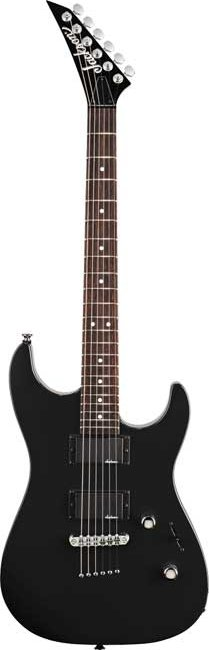
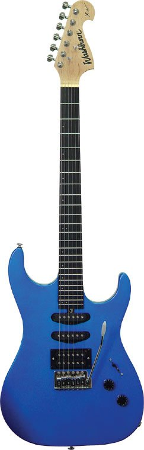
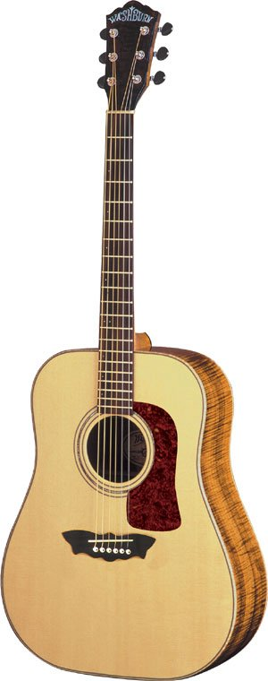
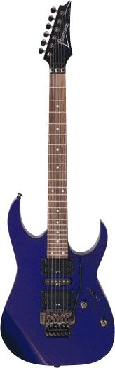

<?
$root = "../";
$title = "Gears";
include $root."layout/header.php";
?>

<b>My gears</b>
<div class="gear">
<h3>Jackson JS30 DKT Hardtail</h3>
since 03-2007 <br>
</img>
</div>

<div class="gear">
<h3>Washburn X10</h3>
since 03-2007 <br>
</img>
</div>

<div class="gear">
<h3>Washburn Acoustic Guitar</h3>
since 11-1998 <br>
</img>
</div>

<div class="gear">
<h3>Ibanez RG470</h3>
since 11-1997 <br>
</img>
</div>

<div class="gear">
<h3>El Prado Classical Guitar</h3>
since 02-1996 <br>
</img>
</div>

<?
include $root."layout/footer.php";
?>
